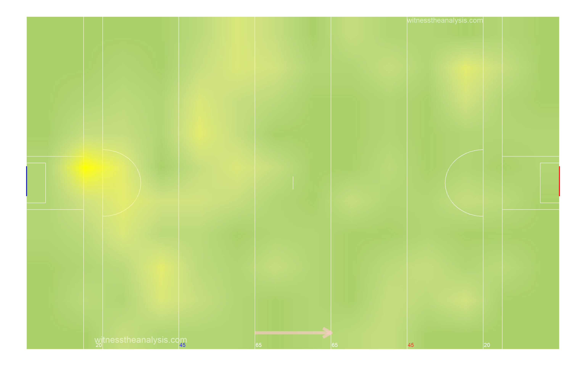
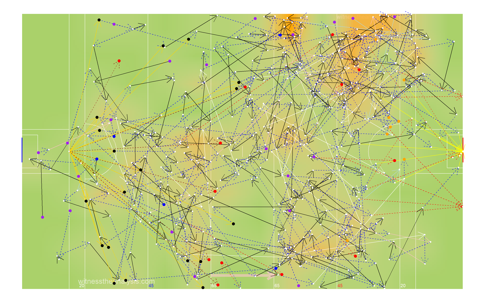
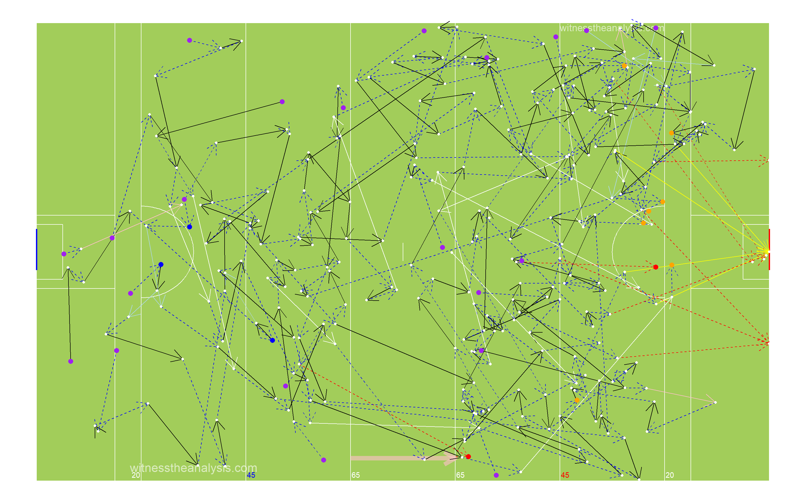
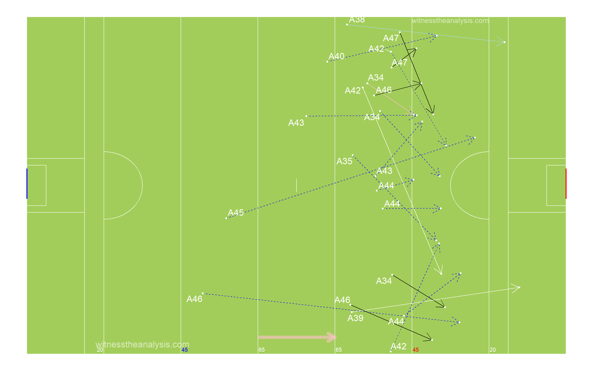
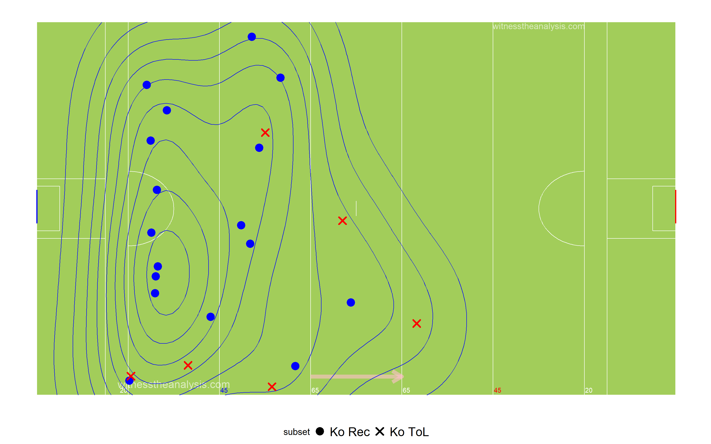
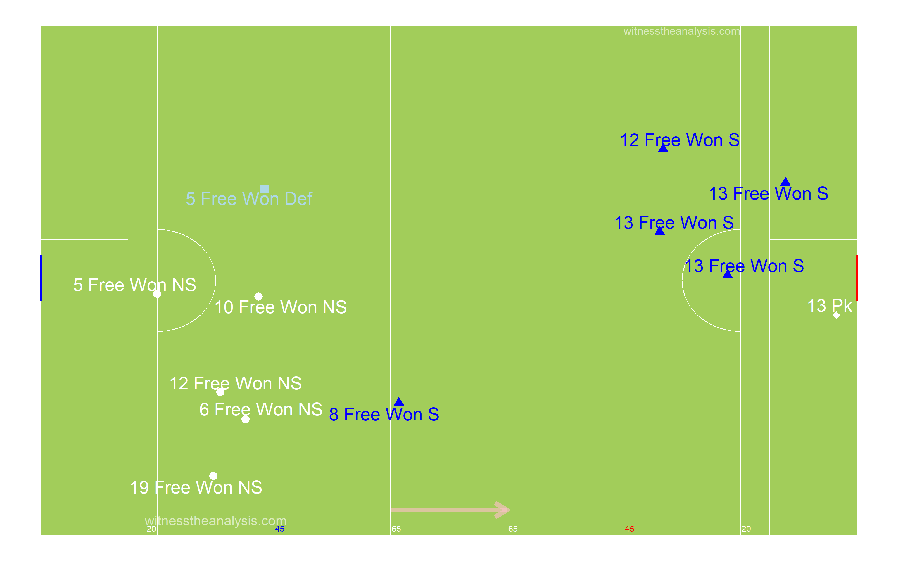
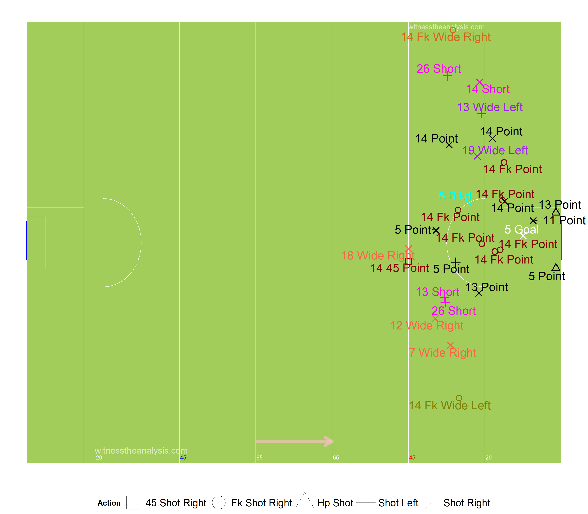
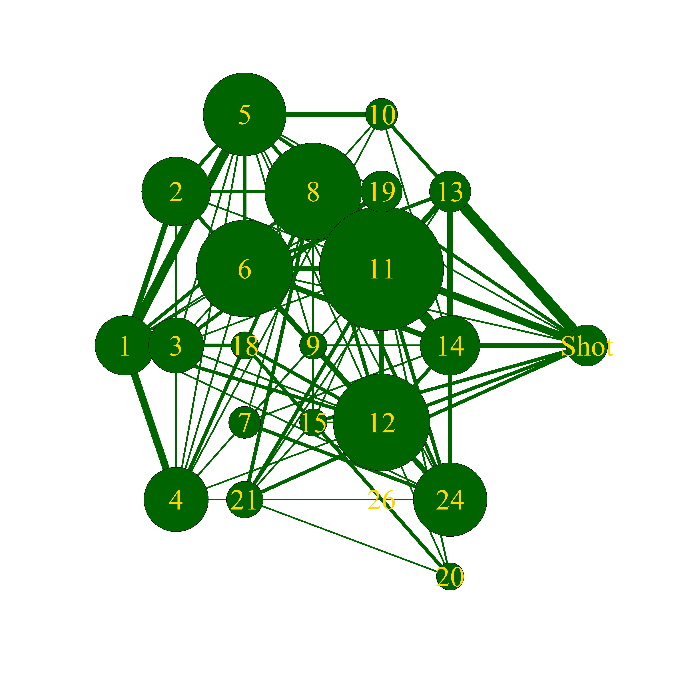

Dublin (1.16) vs Kerry (1.16)
All Ireland Final - 2019
#Summary
##Starting Line Up (Number, Player, Playing time)
###Dublin
###Kerry
##Scores
| Dublin | Kerry |
|---|---|
| McCaffrey (1-03 ), | Crowley (0-01), |
| O Callaghan (0-01), | O Shea (0-10, 4f, 3 ’45’), |
| Mannion (0-02), | O Brien (0-01); |
| Rock (0-10, 6f, 1 ’45’), | Clifford (0-02), |
| K Spillane (1-01) | |
| Walsh (0-01) |
##Efficiency
| Team | Score.Eff.. | Shots.PerPoss | Scores.PP | Op.Scores.PP | Fk.Score. | Ko. |
|---|---|---|---|---|---|---|
| Dublin | 50% | 62% | 21% | 21% | 75% | 72% |
| Kerry | 43% | 66% | 21% | 21% | 100% | 70% |
##Scoring Timeline
##Score Differential
#Positioning & Possessions
##Average Position by Action
###Dublin
###Game
###Period
###Kerry
###Game
###Period
##Areas of Play by Possession
###Dublin
###Kerry

##Denisty Map (All Actions)
###Dublin
###Kerry

##Path of Possession
| Lines | X | X.1 | X.2 |
|---|---|---|---|
| Action | Colour | Action | Colour |
| Hand Pass | Black | Kickout Lost | Dark Red |
| Run | Blue | Kick Pass Left | Pink |
| Score | Yellow | Kick Pass Right | White |
| Miss shot | Red | Fk/Mk/Sl Pass | Light Blue |
| Kickout | Gold | Pass Loss | Red |
| Dots | |||
| Action | Colour | ||
| Possession Won | Purple | ||
| Ko/Pass Lost | Red | ||
| Fk Won | Blue | ||
| Fk Won (in 45) | Orange | ||
| Kickout Won | Black |
###Dublin - Game

###Pop Starting from Possession Won

###Pop Starting from Kick Out
###Dublin - Period 1
###Dublin - Period 2
###Dublin - Period 3
###Dublin - Period 4
###Kerry - Game
###Pop Starting from Possession Won
###Pop Starting from Kick Out
###Kerry Period - 1
###Kerry Period - 2
###Kerry Period - 3

###Kerry Period - 4
##45 Entries
###Dublin - Game
###Dublin - Period 1
###Dublin - Period 2
###Dublin - Period 3
###Dublin - Period 4

###Kerry - Game
###Kerry - Period 1

###Kerry- Period 2
###Kerry - Period 3

###Kerry - Period 4
###Dublin Total
## count
## 1 49###Dublin Handpass
## count
## 1 12###Dublin Run
## count
## 1 24###Dublin Kick Pass Right
## count
## 1 8###Dublin Pass Lost
## count
## 1 2###Dublin Kick Pass Left
## count
## 1 1###Dublin Fk/Mk/Sl Pass
## count
## 1 2###Kerry Total
## count
## 1 32###Kerry Handpass
## count
## 1 2###Kerry Run
## count
## 1 20###Kerry Kick Pass Right
## count
## 1 6###Kerry Pass Lost
## count
## 1 2###Kerry Kick Pass Left
## count
## 1 1###Kerry Fk/Mk/Sl Pass
## count
## 1 1#General
##Kick Outs
###Dublin
###Kickout Efficiency
###Kickout Network - Dublin
###Kickout Density
###Kerry
###Kickout Efficiency
###Kickout Network - Kerry
###Kickout Density

##Turn overs/Possession Won
###Dublin
###Kerry
##Frees Won
###Dublin
###Kerry

##Frees Loss
###Dublin
###Kerry

#Attacking
##Attacking Stats
| X | Dublin | X.1 | Kerry | X.2 |
|---|---|---|---|---|
| Shot | Score | shot | score | |
| AttTime | 00:15:58 | 00:08:24 | 00:12:24 | 00:06:43 |
| possave | 00:00:34 | 00:00:30 | 00:00:27 | 00:00:24 |
| phaseave | 00:00:23 | 00:00:19 | 00:00:17 | 00:00:13 |
| Origin Type | ||||
| Shot | Score | shot | score | |
| PW | 18 | 9 | 19 | 12 |
| Ko | 10 | 7 | 9 | 5 |
| Pitch Area Origin | ||||
| Shot | Score | shot | score | |
| Def | 15 | 9 | 18 | 6 |
| Def Mid | 4 | 1 | 3 | 2 |
| Att Mid | 7 | 3 | 7 | 2 |
| Att | 3 | 2 | 3 | 0 |
| Poss Duration | ||||
| secs | Shot | Score | shot | score |
| 0-9 | 4 | 3 | 4 | 0 |
| 10-19 | 8 | 8 | 9 | 7 |
| 20-29 | 3 | 1 | 9 | 5 |
| 30-39 | 5 | 1 | 5 | 4 |
| 40-49 | 1 | 1 | 2 | 0 |
| 50-59 | 3 | 0 | 1 | 1 |
| 60-69 | 3 | 1 | 0 | 0 |
| 70+ | 2 | 2 | 1 | 0 |
##Shot Stats
| Team | Poss | Phase | All.Shots | All.Scores | Shots.Per.Poss | Scores.PP | Shots.Op | Scores.Op | Score.Eff.. | Op.Scores.PP |
|---|---|---|---|---|---|---|---|---|---|---|
| Dublin | 47 | 66 | 29 | 17 | 62% | 36% | 20 | 10 | 50% | 21% |
| Kerry | 47 | 65 | 31 | 17 | 66% | 36% | 23 | 10 | 43% | 21% |
| Team | Poss Time | Ave Poss Shot | Ave Phase Shot | Ave Poss Scr | Ave Phase Scr | Ave Act Poss | Ave Act Sht | Ave Act Scr | ||
| Dublin | 00:20:38 | 00:00:34 | 00:00:23 | 00:00:30 | 00:00:19 | 12.51 | 16.71 | 14.82 | ||
| Kerry | 00:17:57 | 00:00:27 | 00:00:17 | 00:00:24 | 00:00:13 | 12.23 | 14.75 | 14.41 |
##Shot Origin & Time
| Dublin | Shots | Time..secs. | X | X.1 | X.2 | X.3 | X.4 | X.5 | X.6 |
|---|---|---|---|---|---|---|---|---|---|
| Area | 0-9 | 10-19 | 20-29 | 30-39 | 40-49 | 50-59 | 60-69 | 70+ | Total |
| Def | 0 | 3 | 2 | 3 | 1 | 1 | 3 | 2 | 15 |
| Def Mid | 0 | 2 | 0 | 1 | 0 | 1 | 0 | 0 | 4 |
| Att Mid | 2 | 2 | 1 | 1 | 0 | 1 | 0 | 0 | 7 |
| Att | 2 | 1 | 0 | 0 | 0 | 0 | 0 | 0 | 3 |
| Dublin | Scores | Time (secs) | |||||||
| Area | 0-9 | 10-19 | 20-29 | 30-39 | 40-49 | 50-59 | 60-69 | 70+ | Total |
| Def | 0 | 3 | 1 | 1 | 1 | 0 | 1 | 2 | 9 |
| Def Mid | 0 | 2 | 0 | 0 | 0 | 0 | 0 | 0 | 2 |
| Att Mid | 1 | 2 | 0 | 0 | 0 | 0 | 0 | 0 | 3 |
| Att | 2 | 1 | 0 | 0 | 0 | 0 | 0 | 0 | 3 |
| Kerry | Shots | Time (secs) | |||||||
| Area | 0-9 | 10-19 | 20-29 | 30-39 | 40-49 | 50-59 | 60-69 | 70+ | Total |
| Def | 0 | 4 | 6 | 4 | 2 | 1 | 0 | 1 | 18 |
| Def Mid | 0 | 1 | 1 | 1 | 0 | 0 | 0 | 0 | 3 |
| Att Mid | 1 | 4 | 2 | 0 | 0 | 0 | 0 | 0 | 7 |
| Att | 3 | 0 | 0 | 0 | 0 | 0 | 0 | 0 | 3 |
| Kerry | Scores | Time (secs) | |||||||
| Area | 0-9 | 10-19 | 20-29 | 30-39 | 40-49 | 50-59 | 60-69 | 70+ | Total |
| Def | 0 | 4 | 2 | 3 | 0 | 1 | 0 | 0 | 10 |
| Def Mid | 0 | 0 | 1 | 1 | 0 | 0 | 0 | 0 | 2 |
| Att Mid | 0 | 3 | 2 | 0 | 0 | 0 | 0 | 0 | 5 |
| Att | 0 | 0 | 0 | 0 | 0 | 0 | 0 | 0 | 0 |
| Line.Colour | Time.secs |
|---|---|
| black | 1-9 |
| blue | 10-19 |
| red | 20-29 |
| purple | 30-39 |
| yellow | 40-49 |
| white | 50-59 |
| orange | 60-69 |
| pink | 70+ |
| Dot Colours | |
| Black & White | Ko Rec’d |
| White & Black | PW |
| Blue & White | Fk Pass |
| Red & White | Op Shot |
| Purple & White | Fk Shot |
| Green & White | 45 |
##Shot Possessions
###Dublin
###Kerry
##Score Possessions
###Dublin
###Kerry
##Open Play Shots - Location & Outcome
###Dublin
###Shot Efficiency - Dublin
###Shot Pressure - Dublin
###Shot Density
###Kerry

###Shot Efficiency - Kerry
###Shot Density
###Shot Pressure - Kerry
##All Shots - Location & Outcome
###Dublin

###All Shot Density
###Free Kick Shot Efficiency - Dublin
###Kerry
###All Shot Density
###Free Kick Shot Efficiency - Kerry
##All Shots Origin by Possession
###Dublin (Blue = Score)
###Kerry (Blue = Score)
##Open Play Shot Origin by Phase
###Dublin (Blue = Score)
###Kerry (Blue = Score)

##Shot Network
###Dublin
###Kerry

##Score Network
###Dublin
###Kerry
#Passing
##Pass Breakdown
| X | Dublin | Kerry |
|---|---|---|
| Total | 188 | 182 |
| Hp | 158 | 145 |
| Kp | 30 | 37 |
| Kp Left | 9 | 8 |
| Kp Right | 21 | 29 |
| Fk Pass | 6 | 7 |
| Sl Pass | 1 | 0 |
| Mk Kp | 2 | 0 |
| Mk Hp | 0 | 0 |
| Sl Kp Won To | 2 | 3 |
| 45 Pass | 0 | 0 |
| Hp Assist | 6 | 4 |
| Kp L Assist | 0 | 0 |
| Kp R Assist | 2 | 3 |
| Hp Key | 8 | 9 |
| Kp L Key | 1 | 0 |
| Kp R Key | 1 | 2 |
| Mk Kp Assist | 0 | 1 |
##All Passes
###Dublin
###Kerry
##Passes into 45
###Dublin
###Kerry
##Passes Inside Opp 65
###Dublin
###Kerry
##Pass Network
###Dublin
###In Degree (Number of Players a Player Received a Pass from)
## Kilkenny McCaffrey Howard Byrne Fitzsimons McCarthy Scully Rock P Small O Callaghan J Small Fenton Mannion Merchant
## 14 10 10 9 9 8 8 8 8 7 6 6 6 6
## Macauley Cooper Connolly McManamon Costello Cluxton
## 5 4 3 3 2 1###Out Degree (Number of Players a Player Made a Pass to)
## Kilkenny Byrne McCarthy Howard Fenton Scully Rock Fitzsimons J Small Macauley P Small Merchant McCaffrey Mannion
## 12 11 11 11 9 9 8 7 7 7 7 7 6 5
## Cooper O Callaghan McManamon Cluxton Connolly Costello
## 4 4 3 2 2 1###Strength in (Number of Passes Received by a Player)
## Kilkenny McCaffrey Howard McCarthy Fenton Scully Fitzsimons O Callaghan Rock P Small Mannion Byrne Macauley J Small
## 28 17 15 14 13 13 12 12 12 12 11 10 9 8
## Merchant Cooper Connolly McManamon Costello Cluxton
## 6 4 3 3 2 1###Strength Out (Number of Passes/Shots Made by a Player)
## Kilkenny Howard Byrne McCarthy Fenton Scully Fitzsimons McCaffrey Macauley J Small Rock P Small O Callaghan Mannion
## 31 18 16 15 15 14 12 12 10 9 9 8 7 7
## Merchant Cooper Cluxton McManamon Connolly Costello
## 7 6 3 3 2 1###Betweenness Centrality (Flow of Passes through a Player)
## Kilkenny Byrne Howard P Small Rock McCarthy Fitzsimons Scully McCaffrey Fenton Merchant J Small Cooper O Callaghan
## 0.132735720 0.092363520 0.069671242 0.056465533 0.055970283 0.041641804 0.020925944 0.015878111 0.014777815 0.014560509 0.014522210 0.011510825 0.007667316 0.006903899
## Macauley McManamon Mannion Connolly Cluxton Costello
## 0.004165717 0.003570329 0.003305109 0.000615574 0.000000000 0.000000000###Closeness Centrality (How Well connected and central a Player is within the Teams Network)
## Byrne Kilkenny Howard Fitzsimons McCaffrey McCarthy Scully P Small J Small Fenton Rock Macauley O Callaghan Mannion
## 0.8260870 0.8260870 0.7916667 0.7600000 0.7307692 0.7307692 0.7307692 0.7307692 0.7037037 0.7037037 0.7037037 0.6551724 0.6551724 0.6551724
## Merchant Cooper Connolly McManamon Cluxton Costello
## 0.6551724 0.5937500 0.5428571 0.5277778 0.5135135 0.5000000###Entropy (The Unpredictability in who a Player Passes to/Takes shot)
## O Callaghan Cluxton Cooper P Small McCaffrey Howard McCarthy Fenton Byrne Fitzsimons Kilkenny Rock Scully J Small
## 0.9425907 0.9463946 0.9488131 0.9526574 0.9558746 0.9586658 0.9588981 0.9607217 0.9629911 0.9638471 0.9656209 0.9700450 0.9752230 0.9774175
## Macauley Mannion Merchant Connolly Costello McManamon
## 0.9793925 0.9805504 1.0000000 1.0000000 1.0000000 1.0000000###Global clustering coefficient (Groups of Players who pass to each other)
## [1] 0.6613226###eigen_centrality (How well connected the well connected are)
## Kilkenny Howard McCaffrey McCarthy Scully Fenton Fitzsimons O Callaghan P Small Macauley Byrne Rock Mannion J Small
## 1.00000000 0.63433403 0.59928089 0.58029397 0.53092115 0.51084884 0.48373968 0.43671380 0.40587806 0.39561562 0.39018868 0.37833868 0.33574277 0.28003898
## Merchant Cooper McManamon Connolly Cluxton Costello
## 0.24255157 0.16078341 0.09392885 0.07055742 0.05643611 0.05372488##Kerry
###In Degree (Number of Players a Player Received a Pass from)
## O Shea Moran O Brien Crowley Barry Foley O Sullivan Murphy Clifford Geaney Ryan Morley
## 14 11 11 10 8 7 7 7 7 7 5 5
## K Spillane Sherwood Walsh O Beaglaoich White Lyne A Spillane Moynihan Griffin
## 4 4 4 3 3 3 2 2 0###Out Degree (Number of Players a Player Made a Pass to)
## O Shea Murphy Crowley Moran O Brien Ryan Foley Barry Morley O Sullivan Geaney Sherwood
## 12 10 10 10 9 8 8 8 7 7 5 5
## O Beaglaoich A Spillane White Moynihan Walsh Lyne Clifford K Spillane Griffin
## 4 4 4 4 3 3 2 1 0###Strength in (Number of Passes Received by a Player)
## O Shea Moran O Brien Ryan Murphy Crowley Geaney Clifford Foley O Sullivan Barry Morley
## 26 17 16 15 15 15 15 12 10 10 10 6
## White Sherwood Walsh Lyne K Spillane O Beaglaoich Moynihan A Spillane Griffin
## 5 5 5 5 4 3 3 2 0###Strength Out (Number of Passes/Shots Made by a Player)
## O Shea Moran Ryan Crowley Murphy O Brien Foley Morley Barry O Sullivan Geaney Sherwood
## 23 18 17 16 14 14 13 13 13 11 9 6
## O Beaglaoich White Clifford A Spillane Walsh Lyne Moynihan K Spillane Griffin
## 5 5 5 4 4 4 4 1 0###Betweenness Centrality (Flow of Passes through a Player)
## O Shea Moran O Brien Crowley Murphy Geaney Barry Foley Ryan O Sullivan Clifford Walsh
## 0.173994086 0.093375519 0.086479548 0.043400952 0.041127167 0.020622810 0.019955697 0.018029368 0.016878348 0.015081316 0.012247058 0.006294904
## Moynihan Lyne White Morley O Beaglaoich A Spillane Sherwood K Spillane Griffin
## 0.006198830 0.004678363 0.002717458 0.002252007 0.001394512 0.001315789 0.001207729 0.001169591 0.000000000###Closeness Centrality (How Well connected and central a Player is within the Teams Network)
## O Shea Moran O Brien Murphy Crowley Barry Ryan Foley O Sullivan Geaney Morley Clifford
## 0.46511628 0.44444444 0.43478261 0.42553191 0.42553191 0.42553191 0.40816327 0.40816327 0.40816327 0.39215686 0.38461538 0.38461538
## A Spillane Sherwood O Beaglaoich Walsh K Spillane Lyne Moynihan White Griffin
## 0.37735849 0.37735849 0.37037037 0.37037037 0.35714286 0.35714286 0.35714286 0.35087719 0.04761905###Entropy (The Unpredictability in who a Player Passes to/Takes shot)
## Geaney Morley Ryan White O Sullivan O Shea Murphy Clifford Foley Crowley Lyne O Brien
## 0.9184144 0.9263986 0.9291618 0.9426807 0.9440847 0.9457933 0.9492181 0.9505180 0.9575270 0.9651862 0.9683925 0.9694511
## Barry Walsh Moran Moynihan Sherwood O Beaglaoich A Spillane K Spillane
## 0.9705113 0.9708358 0.9726392 0.9755038 0.9766147 0.9795698 1.0000000 1.0000000###Global clustering coefficient (Groups of Players who pass to each other)
## [1] 0.5883117###eigen_centrality (How well connected the well connected are)
## O Shea Moran Crowley O Brien Ryan Murphy Geaney Barry Foley O Sullivan Clifford Morley
## 1.00000000 0.77513096 0.74138472 0.66703812 0.64895016 0.64576327 0.62077033 0.55961612 0.53824562 0.51613621 0.46079327 0.43490611
## Sherwood White O Beaglaoich Walsh Lyne A Spillane Moynihan K Spillane Griffin
## 0.25442382 0.23336866 0.21536916 0.20412894 0.16996784 0.15773128 0.12882663 0.10860814 0.01657003#Player Stats
##Player On Ball Possession (Number, Player, Total)
###Dublin

###Kerry
##Posessions Per Playing Time

##Player % involvement and shot efficiency
| Team | ply | opshots | Totteamshot | opscr | Totteamscr | convrate |
|---|---|---|---|---|---|---|
| Dublin | Cluxton | 0 | 0% | 0 | 0 |
|
| Dublin | Byrne | 0 | 0% | 0 | 0 |
|
| Dublin | Cooper | 0 | 0% | 0 | 0 |
|
| Dublin | Fitzsimons | 0 | 0% | 0 | 0 |
|
| Dublin | McCaffrey | 4 | 22% | 4 | 40% | 1 |
| Dublin | McCarthy | 0 | 0% | 0 | 0 |
|
| Dublin | J Small | 1 | 6% | 0 | 0% | 0 |
| Dublin | Fenton | 0 | 0% | 0 | 0 |
|
| Dublin | Macauley | 0 | 0% | 0 | 0 |
|
| Dublin | Scully | 0 | 0% | 0 | 0 |
|
| Dublin | O Callaghan | 1 | 6% | 1 | 10% | 1 |
| Dublin | Howard | 1 | 6% | 0 | 0% | 0 |
| Dublin | Mannion | 3 | 17% | 2 | 20% | 0.666666667 |
| Dublin | Rock | 4 | 22% | 3 | 30% | 0.75 |
| Dublin | Kilkenny | 0 | 0% | 0 | 0 |
|
| Dublin | P Small | 2 | 11% | 0 | 0% | 0 |
| Dublin | Merchant | 0 | 0% | 0 | 0 |
|
| Dublin | Connolly | 1 | 6% | 0 | 0% | 0 |
| Dublin | Costello | 1 | 6% | 0 | 0% | 0 |
| Dublin | McManamon | 0 | 0% | 0 | 0 |
|
| Team | ply | opshots | Totteamshot | opscr | Totteamscr | convrate |
|---|---|---|---|---|---|---|
| Kerry | Ryan | 0 | 0% | 0 | 0 |
|
| Kerry | Foley | 0 | 0% | 0 | 0 |
|
| Kerry | Morley | 0 | 0% | 0 | 0 |
|
| Kerry | O Sullivan | 0 | 0% | 0 | 0 |
|
| Kerry | Murphy | 2 | 9% | 0 | 0% | 0 |
| Kerry | Crowley | 1 | 4% | 1 | 14% | 1 |
| Kerry | O Beaglaoich | 0 | 0% | 0 | 0 |
|
| Kerry | Moran | 1 | 4% | 0 | 0% | 0 |
| Kerry | A Spillane | 0 | 0% | 0 | 0 |
|
| Kerry | White | 0 | 0% | 0 | 0 |
|
| Kerry | O Shea | 4 | 17% | 3 | 43% | 0.75 |
| Kerry | O Brien | 2 | 9% | 1 | 14% | 0.5 |
| Kerry | Clifford | 6 | 26% | 2 | 29% | 0.333333333 |
| Kerry | Geaney | 3 | 13% | 0 | 0% | 0 |
| Kerry | Barry | 0 | 0% | 0 | 0 |
|
| Kerry | K Spillane | 2 | 9% | 2 | 29% | 1 |
| Kerry | Sherwood | 0 | 0% | 0 | 0 |
|
| Kerry | Walsh | 2 | 9% | 1 | 14% | 0.5 |
| Kerry | Lyne | 0 | 0% | 0 | 0 |
|
| Kerry | Moynihan | 0 | 0% | 0 | 0 |
|
| Kerry | Griffin | 0 | 0% | 0 | 0 |
|
##Open Play Shots vs Playing Time

##Open Play Scores vs Playing Time
##Open Play Shots vs Open Play Score
##Open Play Assists vs Playing Time

##Open Play Key Passes vs Playing time
##Player Possession Involvement
###Dublin
###Kerry
##Player Shot Involvement
###Dublin
###Kerry
##Player Score Involvement
###Dublin
###Kerry
##Actions and Zones
##By Period
###Dublin
###Kerry
##Zones Frequency
###Dublin
###Kerry